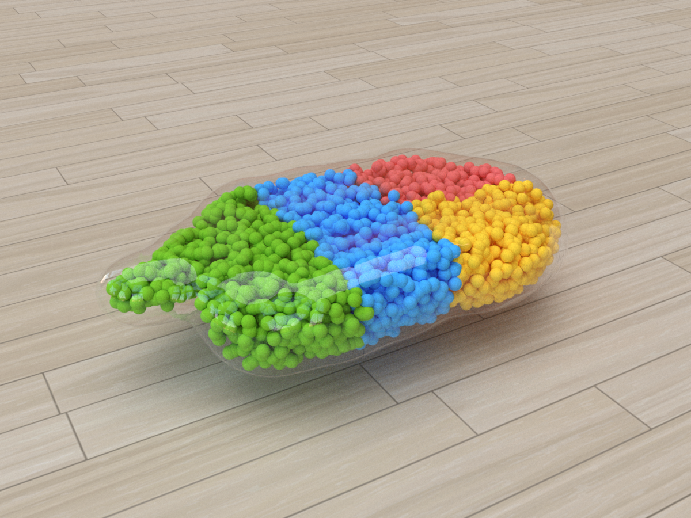

Nature evolves creatures with a high complexity of morphological and behavioral intelligence, meanwhile computational methods lag in approaching that diversity and efficacy. Co-optimization of artificial creatures' morphology and control in silico shows promise for applications in physical soft robotics and virtual character creation; such approaches, however, require developing new learning algorithms that can reason about function atop pure structure. In this paper, we present DiffuseBot, a physics-augmented diffusion model that generates soft robot morphologies capable of excelling in a wide spectrum of tasks. DiffuseBot bridges the gap between virtually generated content and physical utility by (i) augmenting the diffusion process with a physical dynamical simulation which provides a certificate of performance, and (ii) introducing a co-design procedure that jointly optimizes physical design and control by leveraging information about physical sensitivities from differentiable simulation. We showcase a range of simulated and fabricated robots along with their capabilities.
@inproceedings{
wang2023diffusebot,
title={DiffuseBot: Breeding Soft Robots With Physics-Augmented Generative Diffusion Models},
author={Tsun-Hsuan Wang and Juntian Zheng and Pingchuan Ma and Yilun Du and Byungchul Kim and Andrew Everett Spielberg and Joshua B. Tenenbaum and Chuang Gan and Daniela Rus},
booktitle={Thirty-seventh Conference on Neural Information Processing Systems},
year={2023},
url={https://openreview.net/forum?id=1zo4iioUEs}
}